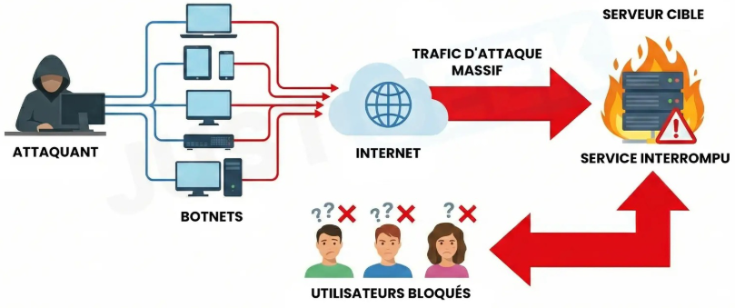
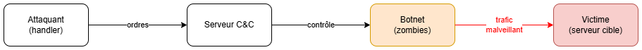

Coordination inter-nœuds pour une défense
collaborative contre les attaques DDoS :
conception d'un protocole distribué basé sur des API sécurisées
Sommaire
Plan de la présentation
01
Contexte & Problématique
03
Conception & Architecture
04
Implémentation & Évaluation
05
Conclusion & Perspectives
01 — Contexte
Qu'est-ce qu'une attaque DDoS ?
Une attaque DDoS (Distributed Denial of Service)
vise à rendre un service en ligne
totalement inaccessible en le submergeant de trafic
provenant de milliers de machines compromises — les
botnets.
- L'attaquant orchestre le botnet à distance
- Des millions de requêtes frappent simultanément la cible
- Le serveur s'effondre — les utilisateurs légitimes sont bloqués


01 — Contexte
Types d'attaques DDoS
Volumétrique
Saturation de la bande passante par un volume massif de trafic.
Exemples
- UDP Flood
- DNS Amplification
- NTP Reflection
Jusqu'à 2,2 Tbps (2025)
Protocole
Exploitation des vulnérabilités des protocoles réseau pour épuiser les ressources des équipements.
Exemples
- SYN Flood
- Ping of Death
- Smurf Attack
Cible routeurs & pare-feux
Applicatif (L7)
Ciblage de la couche applicative pour épuiser les ressources du serveur avec peu de trafic.
Exemples
- HTTP Flood
- Slowloris
- GET/POST Flood
Difficile à détecter
01 — Contexte
Explosion des attaques DDoS
47,1 M
attaques DDoS en 2025 (+121 % vs 2024)
+236 %
de hausse entre 2023 et 2025
31,4 Tbps
pic d'attaque record — Q4 2025
5 376 /h
attaques mitigées en moyenne par heure
01 — Contexte
Infrastructures de mitigation existantes
| Solution |
Couches |
Capacité |
Avantage principal |
Limite principale |
| Scrubbing center |
L3/L4/L7 |
Élevée (Tbps) |
Filtrage fin multi-couches |
Coût, latence de redirection |
| CDN (Anycast) |
L7 (HTTP) |
Très élevée |
Distribution géographique |
Limité au trafic web |
| Pare-feu / IPS |
L3/L4/L7 |
Limitée (Gbps) |
Proximité, contrôle local |
Goulot d'étranglement |
| RTBH Blackholing |
L3 |
Illimitée |
Protège l'infrastructure |
Supprime le trafic légitime |
| Service cloud |
L3/L4/L7 |
Élastique |
Capacité massive, as-a-Service |
Dépendance, coût, confidentialité |
Constat commun : chaque solution opère de manière centralisée et isolée —
aucune ne coordonne sa réponse avec d'autres entités touchées par la même attaque.
01 — Contexte · Problématique
Limites des solutions actuelles
Architecture centralisée
Point de défaillance unique
Capacité limitée
Plafonnée par le fournisseur de service
Coût prohibitif
Inaccessible aux petites organisations
Aucune mutualisation
Ressources isolées, défense solitaire
Comment permettre à des organisations hétérogènes de collaborer
efficacement et en toute confiance pour faire face collectivement aux
attaques DDoS, sans dépendre d'une autorité centrale ?
01 — Contexte · Objectifs
Objectifs du projet
Objectif principal :
Conception et implémentation d'un protocole distribué basé sur des API sécurisées
permettant à plusieurs organisations de collaborer automatiquement pour mitiger collectivement les attaques DDoS.
1
Définir le protocole de communication inter-nœuds
2
Concevoir un modèle d'évaluation des pairs
3
Orchestrer la coordination des nœuds au sein de la coalition
4
Implémenter le protocole sous forme d'un prototype fonctionnel
02 — État de l'art
DOTS — DDoS Open Threat Signaling (IETF)
Standard IETF (RFC 8612 / RFC 8782) pour la signalisation automatisée
d'une attaque entre une entité attaquée (client) et
son prestataire de mitigation (serveur).
Canal de signalisation
CoAP/DTLS/UDP — évite le blocage de tête de ligne. Machine à états : idle → requested → in-progress → terminated
Canal de données
RESTCONF/HTTPS, modèles YANG — alias, ACLs pré-configurées, télémétrie d'attaque
Limites identifiées
- Modèle hiérarchique strict — aucune coordination horizontale entre clients
- Pas de mutualisation de capacité — aucune répartition de charge entre mitigateurs
- Confiance limitée aux relations bilatérales — X.509/PSK pré-provisionnés, pas d'évaluation dynamique
- Pas de partage d'intelligence — transmet des demandes, pas des signatures d'attaque
02 — État de l'art
DDoS Clearing House — Partage collaboratif de fingerprints
Projet SIDN Labs (CONCORDIA, H2020) : partage automatisé d'empreintes
d'attaque (fingerprints) entre membres d'une coalition nationale.
1. DDoS DB local (Dissector) — capture et anonymise les métadonnées du trafic d'attaque
2. Hub central — déduplique, enrichit et stocke les fingerprints
3. Converter — traduit les fingerprints en règles (iptables, BGP Flowspec, scrubbing)
Limites identifiées
- Partage passif sans orchestration — aucune demande de mitigation distribuée
- Architecture centralisée — le hub est un point de défaillance unique (SPOF)
- Partage a posteriori — délai de plusieurs minutes, inefficace contre les attaques courtes
- Confiance implicite — aucune vérification de véracité d'un fingerprint soumis
02 — État de l'art
NaWas / NBIP — Centre national de scrubbing mutualisé
Initiative néerlandaise (NBIP) : infrastructure de scrubbing mutualisée
entre FAI membres, activée par redirection BGP.
1
Annonce du préfixe attaqué via eBGP + communauté BGP de scrubbing
2
NaWas réannonce avec AS-path plus court → attire le trafic
3
Scrubbing lanes : DPI, rate limiting, analyse comportementale, SYN cookies
4
Retour du trafic propre via tunnel GRE / VLAN dédié
Limites identifiées
- Architecture semi-centralisée — PoP concentrés aux Pays-Bas, latence pour membres distants
- Activation semi-manuelle — intervention opérateur requise pour l'injection BGP
- Aucune coordination horizontale — pas de partage de métadonnées entre membres
- Capacité finie — pas de mécanisme d'overflow au-delà de ~1 Tbps
02 — État de l'art
DefCOM — Distributed Cooperative Overlay Defense
Mirkovic et al. — réseau overlay logique de nœuds de défense, l'une
des premières propositions académiques de défense DDoS distribuée.
V-nodes (côté victime) — détectent la surcharge, classifient les flux légitimes/suspects
C-nodes (réseaux intermédiaires) — relaient le contrôle, appliquent le rate limiting
S-nodes (côté source) — filtrage le plus agressif, au plus tôt dans le chemin
Ri = Rmax × wi — répartition du débit max par lien
Limites identifiées
- Contribution académique — évalué en simulation (ns-2), jamais déployé en production
- Aucun standard d'interopérabilité — pas de RFC, pas d'API formalisée
- Confiance implicite — tout nœud est considéré honnête, vulnérable au free-riding
- Scalabilité limitée — découverte par traceroute en O(N²)
02 — État de l'art
Synthèse comparative et positionnement
| Système |
Architecture |
P2P |
Partage méta. |
Sync. actions |
Mutualisation |
Confiance formalisée |
| DOTS (RFC 8612) | Client-serveur | ✕ | ✓ (partiel) | ✓ | ✕ | ✕ |
| DDoS Clearing House | Centralisée | ✕ | ✓ | ✕ | ✕ | ✕ |
| NaWas / NBIP | Semi-centralisée | ✕ | ✕ | ✕ | ✓ | ✕ |
| DefCOM | P2P overlay | ✓ | ✓ (partiel) | ✓ (partiel) | ✕ | ✕ |
| PeerTrust | P2P décentralisée | ✓ | ✕ | ✕ | ✕ | ✓ |
| ShieldNet (ce travail) | P2P plat | ✓ | ✓ | ✓ | ✓ | ✓ |
Aucun système existant ne combine architecture décentralisée, coordination temps réel,
partage de capacités et modèle de confiance formalisé — c'est l'espace que comble notre contribution.
02 — État de l'art
Évolution chronologique des solutions de mitigation
avant 2000 – 2009
Défense périmétrique et filtrage réseau
- Pare-feu / IPS — filtrage par règles, inspection à états
- BCP 38 — Ingress filtering (2000)
- DefCOM (2003) — défense P2P, simulation seulement
- PeerTrust (2004) — modèle de confiance théorique
- RTBH, BGP Flowspec (2009) — automatisation BGP
2010 – 2018
Industrialisation par capacité
- Scrubbing centers commerciaux (Arbor, Prolexic)
- CDN anti-DDoS (Cloudflare, Akamai)
- Bohatei (2015) — défense élastique SDN
- Cloud DDoS Protection (AWS Shield, Azure, Google Cloud Armor)
- Mirai (2017) — botnet IoT massif
2019 – 2025
Normalisation et partage inter-opérateurs
- DOTS — RFC 8612 / 8782 / 9244 (signalisation IETF)
- DDoS Clearing House (2021) — partage de fingerprints
- NaWas / NBIP (2023) — mutualisation de scrubbing
- Cloudflare : 348 Tbps, 47,1 M attaques (2025)
Chaque système couvre une dimension distincte (signalisation, partage, ou mutualisation) —
aucun ne combine les trois avec un modèle de confiance dynamique entre pairs.
03 — Conception
Notre solution : Architecture globale du système
Distribué & P2P
Aucune autorité centrale — chaque nœud est autonome et pair des autres
Coalition dynamique
Les nœuds forment une coalition à la demande, selon leur disponibilité et leur confiance
API REST sécurisées
Toutes les interactions inter-nœuds passent par des API authentifiées et chiffrées
Résilience
La défaillance d'un nœud n'affecte pas le reste de la coalition
03 — Conception
Architecture conceptuelle d'un nœud
Rôle dans la coalition (12 cas d'usage, 4 groupes)
Membership
S'enregistrer, publier ses capacités, découvrir/lister les pairs, envoyer un heartbeat événementiel (adhésion/mise à jour), quitter la coalition
Session d'aide
Recevoir une demande → accepter / rejeter ; ou proposer proactivement de l'aide (auto_offer_enabled)
Confiance
Interroger la coalition sur sa réputation — fournit le Cr utilisé dans la formule PeerTrust
Sécurité
Obtenir un token JWT RS256 — prérequis à tout appel API authentifié
Données qu'il détient (14 tables, 4 catégories)
Sa configuration
LocalNodeConfig, PolicyConfig, ScrubbingCapability
Les pairs connus
Peer, PeerCapability, TrustScore, ReciprocityLedger/Transaction, TrustViolation
L'activité opérationnelle
Attack, HelpSession, HeartbeatLog
La traçabilité
MessageLog, AuditLog
Le rôle est dynamique et symétrique : un même nœud est tour à tour victime (demande d'aide) et pair aidant (répond à une demande) — aucun rôle n'est figé à l'avance.
03 — Conception
Cycle de vie d'une session de mitigation
1
Détection
Attaque enregistrée en base
2
Help Request
POST /help/request aux pairs sélectionnés par le WSM
3
Réception offres
Pairs répondent — session OFFERED si non BANNED, 403 sinon
4
Recalcul des taux d'allocation
Répartition WRR proportionnelle au score WSM de chaque pair acceptant
5
Activation des sessions
PUT /help/{id}/accept — capacité confirmée, session ACCEPTED
6
Redirection
POST /traffic/redirect — trafic acheminé vers les helpers, session ACTIVE
7
Clôture des sessions
POST /attack/over — sessions COMPLETED, volumes réels capturés
8
Recalcul des scores
T(u) recalculé via S·Cr·D — niveaux GOLD/SILVER/BRONZE/BANNED mis à jour
9
Audit & Logs
Événements écrits dans AUDIT_LOG & MESSAGE_LOG — traçabilité complète
REQUESTED
→
OFFERED
→
ACCEPTED
→
ACTIVE
→
COMPLETED
REJECTED si BANNED
03 — Conception · Modèle de données
Données — Configuration & politique du nœud
LocalNodeConfig
Identité et capacité du nœud
- node_id, node_name
- organization_type, country_code
- api_endpoint_url, public_key
- max_scrubbing_capacity_gbps
- current_load_percent, status
PolicyConfig
Règles de participation à la coalition
- min_trust_score_to_help
- max_capacity_share_pct
- heartbeat_interval_sec
- auto_offer_enabled
ScrubbingCapability
Capacités de filtrage déclarées
- max_capacity_gbps
- filtering_accuracy
- is_active
03 — Conception · Modèle de données
Données — Gestion des pairs et confiance
Peer
- peer_id, organization_type
- status, membership_status
- declared_available_gbps
- measured_latency_ms
PeerCapability
- declared_capacity_gbps
- verified, verified_at
TrustScore
- overall_score, trust_level
- reliability_score
- performance_score
- reciprocity_score, stability_score
ReciprocityLedger
- credits_given
- credits_received
- balance
ReciprocityTransaction
- transaction_type
- credit_amount
TrustViolation
- violation_type, severity
- sanction_applied
- sanction_until
trust_level :
GOLD ≥0,80
SILVER ≥0,60
BRONZE ≥0,40
SUSPECT ≥0,20
BANNED <0,20
03 — Conception · Modèle de données
Données — Activité opérationnelle
Attack
- peak_volume_gbps
- overflow_volume_gbps
- severity, status
- target_ip_range, target_service
- coalition_helped, nb_peers_involved
HelpSession
- status (REQUESTED→…→COMPLETED)
- allocation_pct
- accepted_volume_gbps
- actual_volume_gbps, cr_value
- tunnel_type
HeartbeatLog
- reported_status
- reported_load_pct
- reported_available_gbps
- round_trip_time_ms
Échelle de sévérité — calculée selon le volume total filtré (échelle Stormwall)
03 — Conception · Modèle de données
Données — Traçabilité & audit
MessageLog
Journal de tous les messages P2P échangés
- message_type (HELLO, HEARTBEAT, HELP_REQUEST, HELP_OFFER, TRAFFIC_REDIRECT...)
- direction (SENT / RECEIVED)
- signature_valid
- processing_result (PROCESSED, REJECTED, FORWARDED, ERROR)
AuditLog
Trace des événements système critiques
- event_type (PEER_BANNED, TRUST_LEVEL_CHANGED, AUTH_FAILURE...)
- severity (INFO, WARNING, ERROR, CRITICAL)
- actor, target
- description, timestamp
03 — Conception · Confiance
Algorithme de confiance — PeerTrust
T(u) = Σ [S · Cr · D] / Σ [Cr · D]
Adapté de Xiong & Liu, PeerTrust: Supporting Reputation-Based Trust for Peer-to-Peer Electronic Communities, IEEE TKDE, 2004.
S
S(u,i) = min(1, V_réel / V_accepté)
Rapport entre le volume réellement filtré et le volume accepté lors de la session i. Capturé à la clôture via POST /attack/over.
Cr
Cr(i) = moyenne des T(u) vus par les autres nœuds
Crédibilité du pair évalué vue par la coalition — moyenne des scores que lui attribuent les autres nœuds actifs, collectée via fetchCrFromNetwork().
D
D : LOW=0,25 · MEDIUM=0,50 · HIGH=0,75 · CRITICAL=1,00
Facteur contextuel de sévérité de l'attaque — pondère davantage les sessions critiques dans le calcul de la confiance.
Niveaux de confiance :
GOLD
T(u) ≥ 0,80
pair très fiable, prioritaire dans la sélection
SILVER
T(u) ≥ 0,60
pair fiable, éligible à la coalition
BRONZE
T(u) ≥ 0,40
pair acceptable — score cold start = 0,50
SUSPECT
T(u) ≥ 0,20
pair peu fiable, écarté de la coalition
BANNED
T(u) < 0,20
banni automatiquement — demandes rejetées 403
03 — Conception · Sélection des pairs
Modèle d'évaluation des pairs — WSM
Score(p) = 0,52·C + 0,20·L + 0,20·T + 0,08·R
52% — C
Capacité disponible
Cp = cap_dispo / max(cap_dispo)
Bande passante disponible du pair normalisée par le maximum de la coalition. Source : heartbeat (reported_available_gbps).
20% — L
Latence réseau
Lp = 1 − (lat − min) / (max − min)
RTT inversé et normalisé — un pair plus rapide obtient un score plus élevé. Source : round_trip_time_ms du heartbeat.
20% — T
Score de confiance
Tp = overall_score ∈ [0, 1]
Score PeerTrust du pair : T(u) = Σ[S·Cr·D] / Σ[Cr·D]. Déjà normalisé entre 0 et 1. Source : table TRUST_SCORES.
8% — R
Réciprocité
Rp = reçus / (reçus + donnés + ε)
Proportion de crédits reçus sur le total échangé. Favorise les pairs qui ont déjà aidé. Source : table RECIPROCITY_LEDGER.
Poids dérivés par la méthode AHP — Ratio de cohérence CR = 1,6 % < 10 % ✓ | Seuil d'éligibilité : Tp ≥ 0,65
03 — Conception · WSM
Détermination des poids — Méthode AHP
La méthode AHP (Analytic Hierarchy Process) de Saaty
consiste à comparer les critères deux à deux selon leur importance relative,
puis à en dériver les poids par normalisation du vecteur propre principal.
| Critère |
Capacité |
Latence |
Confiance |
Réciprocité |
Poids w |
| Capacité | 1 | 3 | 3 | 7 |
0,52 |
| Latence | 1/3 | 1 | 1 | 3 |
0,20 |
| Confiance | 1/3 | 1 | 1 | 3 |
0,20 |
| Réciprocité | 1/7 | 1/3 | 1/3 | 1 |
0,08 |
| Ratio de cohérence CR |
1,6 % |
CR = 1,6 % < 10 % → matrice cohérente ✓
Un Ratio de Cohérence (CR) < 10 % garantit que les jugements ne sont pas aléatoires et que les poids dérivés sont fiables.
Justification des poids :
Capacité — 52 %
Facteur limitant direct lors d'une attaque volumétrique : un pair très fiable mais saturé ne peut pas contribuer.
Latence & Confiance — 20 % chacun
Poids égaux : la latence affecte la qualité de la redirection, la confiance garantit la fiabilité du pair.
Réciprocité — 8 %
Facteur d'équité à long terme : encourage les pairs à contribuer en retour, mais reste secondaire en urgence.
03 — Conception · Sélection des pairs
Distribution du trafic — allocation aux pairs acceptants
Le score WSM sert uniquement à choisir qui solliciter (capacité, latence, confiance, réciprocité). Une fois qu'un pair accepte, le volume qu'il absorbe correspond directement à sa capacité déclarée — pas à une fraction recalculée à partir de son score.
alloci = capacité_déclaréei (Gbps)
La répartition entre pairs acceptants reste proportionnelle à leur capacité réelle, jamais à leur score WSM — aucun pair n'est jamais bridé par le score d'un autre, et aucun n'est jamais sollicité au-delà de ce qu'il a déclaré pouvoir faire.
Exemple à 2 pairs acceptants
| Pair | Capacité | Overflow = 10 | Overflow = 20 |
|---|
| A | 3 Gbps | 2,3 Gbps | 3 Gbps (max) |
| B | 10 Gbps | 7,7 Gbps | 10 Gbps (max) |
Overflow ≤ Σ capacité : couverture à 100 %, répartie proportionnellement à la capacité de chacun.
Overflow > Σ capacité : chaque pair donne son maximum déclaré — le reste est une limite physique réelle de la coalition à cet instant, pas un défaut de l'algorithme.
03 — Conception · Protocole
Protocole de communication inter-nœuds
1
Heartbeat — signal événementiel (adhésion, mise à jour) de la disponibilité et de la latence des pairs
2
Help Request — demande d'aide envoyée aux pairs lors d'une attaque
3
Help Offer — acceptation ou refus du pair sollicité
4
Traffic Redirect — redirection du trafic vers les nœuds helpers
03 — Conception · Sécurité
Sécurisation des échanges — JWT RS256
- Token JWT RS256 — durée de vie : 15 minutes
- Chaque nœud signe avec sa clé privée
- Le récepteur vérifie avec la clé publique du pair
- mTLS : chiffrement au niveau transport
- Certificats auto-signés par nœud
Garantie : un nœud ne peut pas usurper l'identité d'un pair —
chaque clé privée est unique et non partagée.
04 — Implémentation · Déploiement
Déploiement — Infrastructure distribuée
Nœuds réels déployés
node-university
Université — 10 Gbps — port 3001
node-isp
Algérie Télécom — 20 Gbps — port 3003
node-pme
PME Algéroise — 5 Gbps — port 3002
node-datacenter
Datacenter Oran — 15 Gbps — port 3004
Communication via HTTPS/mTLS (port 8443) · Orchestration Docker Compose
Pairs virtuels simulés
100 instances (sim-001 … sim-100) enregistrées via URLs *.shieldnet.local, interceptées par le middleware sans appel réseau réel.
Chaque sim-peer est initialisé avec un niveau de confiance aléatoire (GOLD / SILVER / BRONZE / SUSPECT) et un taux de refus probabiliste — permettant de simuler une coalition à grande échelle sur un seul poste.
04 — Implémentation
Stack technique
Node.js v20 LTS
Modèle événementiel asynchrone, idéal pour les échanges inter-nœuds concurrents
Express.js v4
Framework REST minimaliste — structure les 14 routes API du protocole
PostgreSQL 15
Conformité ACID, support UUID/ENUM, contraintes FK en cascade
Sequelize v6
ORM Node.js — mappe les 14 modèles objet vers les tables PostgreSQL
Docker Compose
4 nœuds conteneurisés + PostgreSQL — déploiement reproductible
Swagger / OpenAPI 3
Documentation interactive auto-générée de tous les endpoints
04 — Implémentation · Protocole
Signal de présence événementiel — Heartbeat
Principe
Chaque nœud envoie un POST /heartbeat à ses pairs sur événement — adhésion à la coalition ou mise à jour de ses paramètres — et non selon un intervalle fixe. Évite la croissance en O(N²) d'un envoi périodique vers toute la coalition.
Ce qui est transmis
reported_status — ACTIVE / INACTIVEreported_load_pct — charge CPU/réseau en %reported_available_gbps — bande passante disponibleround_trip_time_ms — RTT mesuré
Conséquences
- Mise à jour de
last_heartbeat, de la capacité et de la latence du pair
- Détection réactive (pas de minuteur) : un pair injoignable lors d'un vrai
/help/request est marqué INACTIVE à cet instant, exclu de la sélection WSM suivante
- RTT et capacité alimentent directement les critères L et C du WSM
Requête — POST /heartbeat
{
"peer_id": "550e8400-e29b-41d4-...",
"reported_status": "ACTIVE",
"reported_load_pct": 42.5,
"reported_available_gbps": 5.75,
"round_trip_time_ms": 18
}
Réponse — 201 Created
{
"message": "Heartbeat recorded",
"heartbeat": {
"peer_id": "550e8400-...",
"reported_status": "ACTIVE",
"reported_load_pct": 42.5,
"reported_available_gbps": 5.75,
"round_trip_time_ms": 18
}
}
04 — Implémentation · Protocole
Enregistrement et découverte des pairs
Enregistrement (POST /peers/register)
Chaque nœud s'enregistre auprès de ses pairs en fournissant son identifiant, son URL, sa clé publique RSA et sa capacité. La clé publique permet ensuite la vérification des tokens JWT RS256.
Liste des pairs (GET /peers)
Retourne tous les pairs connus avec leur statut, leur score de confiance et leur capacité disponible. Utilisé par le WSM pour construire la liste des candidats.
Requête — POST /peers/register
{
"peer_id": "550e8400-e29b-41d4-...",
"node_name": "node-isp",
"api_url": "https://node-isp:8443",
"public_key": "-----BEGIN PUBLIC KEY-----\n...",
"capacity_gbps": 20,
"membership_status":"ACTIVE"
}
Réponse — 201 Created
{
"peer_id": "550e8400-...",
"node_name": "node-isp",
"status": "ACTIVE",
"trust_level":"BRONZE",
"trust_score": 0.5
}
04 — Implémentation · Protocole
Messages JSON — Session de mitigation
① POST /help/request — demande d'aide
{
"attack_id": "a1b2c3d4-...",
"helping_peer_id": "550e8400-...",
"requesting_node_id": "node-university",
"allocation_pct": 60,
"tunnel_type": "GRE"
}
② PUT /help/{id}/accept — acceptation
{
"accepted_volume_gbps": 8.5,
"tunnel_type": "GRE",
"response_time_ms": 230
}
// Réponse
{
"session_id": "f9e8d7c6-...",
"status": "ACCEPTED"
}
③ POST /traffic/redirect — activation
{
"session_id": "f9e8d7c6-...",
"tunnel_type": "GRE",
"volume_gbps": 8.5
}
// Réponse
{
"status": "ACTIVE",
"activated_at":"2026-05-22T10:00:07Z"
}
④ POST /attack/over — clôture
{
"attack_id": "a1b2c3d4-...",
"session_ids": ["f9e8d7c6-..."],
"attack_duration_seconds": 300
}
// Réponse
{
"status": "ENDED",
"severity": "HIGH",
"coalition_helped": true
}
04 — Implémentation · Évaluation
Tests & Scalabilité
Pairs virtuels (simulation)
100 pairs simulés (sim-001 … sim-100) enregistrés via URLs *.shieldnet.local, auto-acceptés par le middleware.
Chaque sim-peer dispose d'un niveau de confiance aléatoire (GOLD / SILVER / BRONZE / SUSPECT) et d'un taux de refus probabiliste pour simuler des comportements réels.
Scénario de test
- Attaque simulée à 25 Gbps sur le nœud Université
- WSM interroge les 100 pairs — filtre BANNED/INACTIVE
- Top-N pairs sélectionnés, allocation WRR proportionnelle
- Sessions activées et fermées via
POST /attack/over
100
pairs simulés enregistrés
48
nœuds éligibles retenus par le WSM
< 10 s
mobilisation complète de la coalition
25 Gbps
attaque simulée mitigée
05 — Conclusion
Bilan & Perspectives
Bilan
- Protocole distribué formalisé et implémenté
- Modèle WSM validé (CR = 1,6 %)
- PeerTrust : confiance dynamique opérationnelle
- Prototype fonctionnel sur 4 nœuds Docker
- 48 nœuds mobilisés en < 10 secondes
Perspectives
- Intégration BGP Flowspec pour redirection réelle
- IA pour la prédiction d'attaques
- Extension multi-pays et multi-domaines
- Standardisation du protocole (RFC)
De la défense isolée → à la défense collective, intelligente et sécurisée
Démonstration
Démonstration en direct
1
Dashboard temps réel — charge, pairs actifs, sessions en cours
2
Simulation d'une attaque DDoS sur le nœud Université
3
Sélection WSM des pairs et activation des sessions d'aide
4
Clôture de l'attaque et recalcul du score PeerTrust
Merci pour votre attention
Questions ?
SI SABER Rania — ESI Alger — 2025/2026